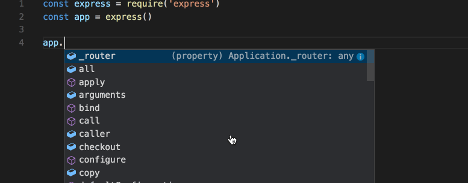
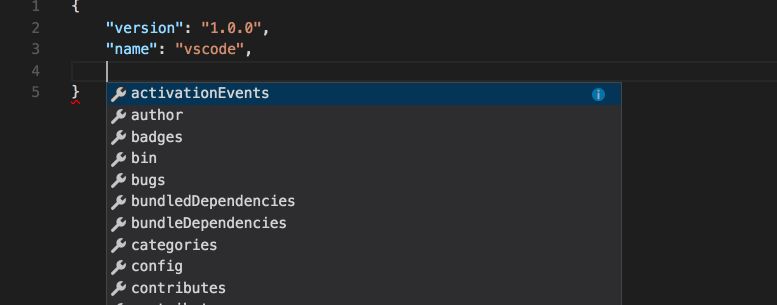
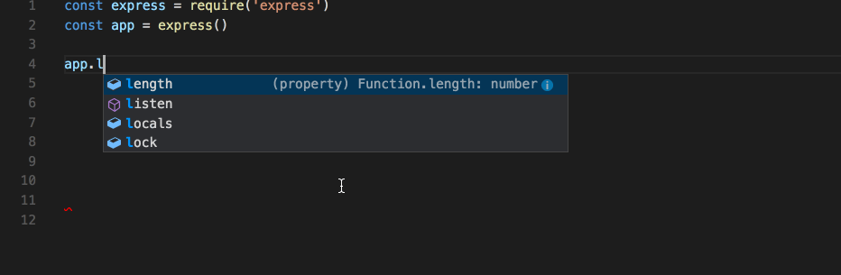
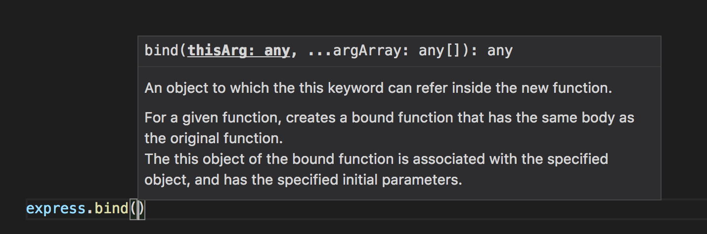
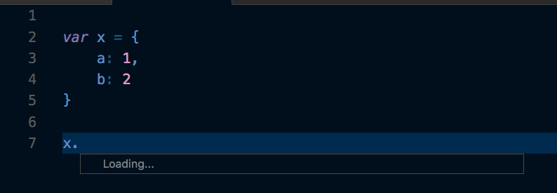

IntelliSenseとは、メンバーの一覧、パラメーター ヒント、クイック ヒント、入力候補など多数の機能を指す総称です。その特徴から「code completion」「content assist」「code hinting」と呼ばれることもあります。

プログラミング言語のIntelliSense
初期のIntelliSenseはJavaScript、TypeScript、JSON、CSS、LESS、SASSに補完を提供します。この状態でもそれなりの言語で単語ベースの補完をサポートしますが、言語拡張機能をインストールすることでより豊かなIntelliSenseを構成可能です。
IntelliSenseの特徴
IntelliSenseの機能は、セマンティクスとソースコードの分析に基づいて高度なコードな補完を生成する言語サーバーによって構成されています。生成された補完はIntelliSenseを通してリスト表示しますが、文字を続けることでIntelliSenseがフィルターをかけて、メンバー(変数、メソッドなど)のより最適なリスト表示が可能になります。こうして出てきた項目はTabやEnterで確定できます。
IntelliSenseを起動するときには、エディタで⌃Space (Windows, Linux Ctrl+Space)もしくはトリガーになるような文字(javascriptではドット(.)などを入力します。

Tip: IntelliSenseはキャメルケースフィルターをサポートしています。ですから、メソッド名に大文字を入力するだけで、項目を限定することができます。例えば「createApplication」を表示するときは「cra」ですぐに表示可能です。
必要に応じて、入力中にIntelliSenseをオフにすることもできます。IntelliSense機能を無効化したり、カスタマイズしたりする詳細方法は Customizing IntelliSenseを参照してください。
言語サービスから提供があるとき、⌃Space (Windows, Linux Ctrl+Space)をおすか情報のアイコンをおすことで、各メソッドのquick infoを確認することができます。メソッドに関するドキュメントが横に展開されます。展開されたドキュメントはそのまま残り、リストを移動すると更新します。⌃Space (Windows, Linux Ctrl+Space)をもう一度おすか、閉じるアイコンをクリックしてこれを閉じることができます。

メソッドを選んだあと、パラメーター情報を提供しているのがわかるかと思います。

該当するものがあるとき、言語サービスはクイックヒントと
とメソッドシグネチャの基になる型を表示します。たとえば上の画像で、いくつかのanyの種類を確認できます。JavaScriptは動的であり型を強制しないのでany変数はどんな型でもいいことを示唆しています。
入力候補の種類
下のJavaScriptコードでIntelliSenseによる入力候補の例を示しています。以下の画像を見てもわかりますが、候補とプロジェクトのグローバル識別子の両方を表示します。候補のシンボルが最初に表示され、続いてグローバル識別子を表示します。

IntelliSenseは言語サーバーの候補、スニペット、単純な単語のテキスト補完などさまざまな種類の補完を提供します。
| メソッド、関数、コンストラクター | |
 | 変数またはフィールド |
 | クラス |
 | インターフェイス |
 | モジュール |
 | プロパティまたは属性 |
 | 値と列挙 |
 | 参照 |
| キーワード | |
 | グローバル識別子 |
| 色 | |
| ユニット | |
| スニペットプレフィックス | |
 | 単語 |
 | その他 |
IntelliSenseのカスタマイズ
設定とキーバインドを変更してIntelliSenseの操作をカスタマイズできます。
設定
以下に示す例は既定の設定です。settings.jsonで設定を変更する場合はUser and Workspace Settingsの説明を参照してください。
|
既定では1つのウィジェットで修正候補と一緒にスニペットを表示します。これをeditor.snippetSuggestions設定で制御することが可能です。このウィジェットからスニペットを削除するにはnoneに設定します。スニペットを一緒に表示する場合、その並び替えの方法は指定できます。上部("top") 下部("bottom“) アルファベット順("inline")です。デフォルトは"bottom“です。
キーバインド
次に示すキーバインディングは、既定の設定です。これらはKey Bindingsにしたがってkeybindings.jsonファイルで変更することができます。
Note: 以下の例はIntelliSenseのごく一部設定をまとめています。Default Keyboard Shortcuts (File > Preferences > Keyboard Shortcuts*) を開いて”suggest”を検索てください。
|
トラブルシューティング
IntelliSenseが機能しないときは、言語サービスが実行されていない可能性があります。VS Codeを再起動すればこの問題は解決するはずです。言語拡張機能をインストールしてもIntelliSense機能が不足している場合は、そのレポジトリで問題を確認してください。
Tip: JavaScript の IntelliSense 設定とトラブルシューティングについてはこちらを確認できます。
入手した言語拡張がIntelliSense機能を完全にサポートするとは限りません。拡張機能のREADMEで何がサポートされているのか確認します。もし、言語拡張に問題があると思ったら Marketplace で拡張機能を検索して、 サポートリンクを探してください。
次のステップ
IntelliSenseはVS Codeの強力な機能の1つにすぎません。VS Codeにさらに詳しくなりましょう。
- JavaScript - Get the most out of your JavaScript development, including configuring IntelliSense.
- Node.js - See an example of IntelliSense in action in the Node.js walkthrough.
- Debugging - Learn how to set up debugging for your application.
よくある質問
Q: なぜ何の候補もないのですか？

A: これには様々な理由が考えられます。まずVS Codeを再起動してみてください。それでも問題が解決しないは、言語拡張のドキュメントを参照してください。JavaScirpt特定のトラブルシューティングについてはJavaScript language topicを参照できます。
Q: メソッドと変数の提案が表示されないのはなぜですか？

A: この問題はJavaScriptに型定義(typings)ファイルが見つからないことが原因です。TypeSearchを利用して、型定義ファイルのパッケージが特定のライブラリーで使用可能かどうかを確認できます。この問題の詳細はJavaScript 言語のトピックにあります。その他言語については拡張機能のドキュメントを参照してください